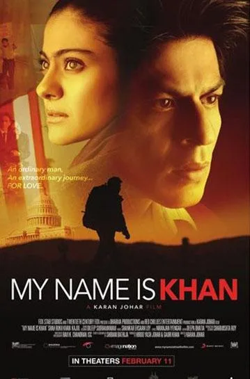
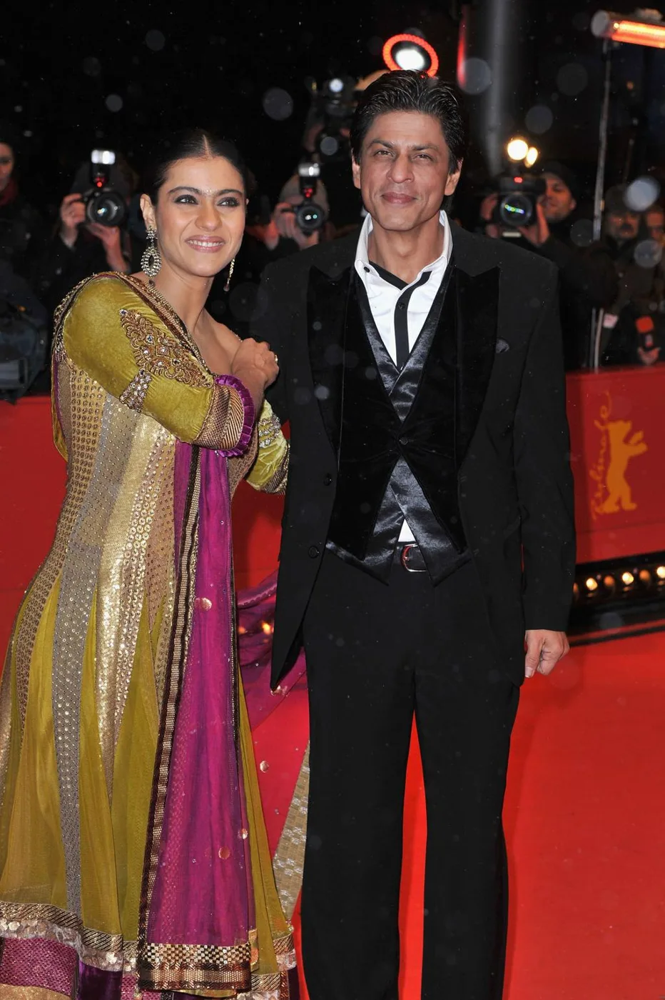

Part II · The First Digital Empire Starts With…, 2000 to 2013 · 11 of 57
Chapter 9 · My Name Is Khan, 2010: the star becomes the platform
January 2010: the line reopens. Ten years after SRKWorld he opened a direct line to his audience again, and this time he did not have to build it. He joined Twitter as @iamsrk at the start of January 2010. His first tweet began: “Being extremely shy I never thought I would be here.” Karan Johar had talked him into it. Five years later the account had 10.7 million followers. (Fact. IBTimes; sources give 2 or 3 January for the first tweet) The shy man who had built a website in 2000 now had a microphone in every fan’s pocket, and he held it himself. (Analysis)

My Name Is Khan (2010): the poster. (Image: Final Thesis archive)
The first film he sold through it was the most personal of his career: Rizwan Khan, a Muslim man with Asperger’s syndrome, crosses post-9/11 America to tell its president one sentence: “My name is Khan, and I am not a terrorist.” It could have stayed a festival title. Its campaign made it a global release. (Analysis)
The deal. On 7 August 2009 Red Chillies signed a worldwide distribution deal with Fox Star Studios, reported at ₹100 crore; Fox did not disclose the figure. Fox Star distributed in India, Fox Searchlight in the United States and 20th Century Fox elsewhere. (Fact. Wikipedia: My Name Is Khan; Filmibeat, 2 Sept 2009) A week later came Newark. Six months before the release of a film whose hero is stopped and questioned because of his name, its star was stopped and questioned because of his. This book records it as an event, not a plan. (Analysis)
Every front at once. The first look was broadcast across 70 countries on the Star network. The trailer ran with Avatar, then became the first in India to run as a roadblock: three minutes on all the leading channels at the same moment. On 1 February 2010 he and Kajol became the first Indian film stars to ring the NASDAQ opening bell, to launch a film, not to list a company. (Fact. Wikipedia; Deccan Herald) Reebok launched an MNIK range, led by the “Winning Stride” shoe his character wears; DishTV, Bharti Airtel, Samsonite, Century Ply, MakeMyTrip and Kyazoonga signed tie-ups, and one let a fan win a meeting with him at Mannat. (Fact. FashionUnited; exchange4media, 3 Feb 2010) At the Berlin Film Festival, where it opened out of competition, screening tickets auctioned at £1,000 each sold out in five seconds. (Fact. Filmibeat, 2 Feb 2010)
The year a city stood behind him. At home, the Shiv Sena demanded a boycott until he apologised for saying Pakistani cricketers should have been picked for the IPL. Mumbai police detained 1,023 Sena activists in 24 hours and guarded 63 cinemas. He did not apologise. On 12 February 2010 the first multiplex shows sold out within hours. (Fact. Governance Now, 10 Feb 2010; Al Jazeera, 12 Feb 2010)
Hold that image. In 2010 a city queued around the block to stand behind him. Eleven years later, at his own gate, by the author’s account, nobody came. (Analysis; Recollection)
What it earned. About ₹223 crore worldwide; the first Indian film to gross more than ₹100 crore overseas, about US$23.5 million; the highest-grossing Bollywood film to that date in Britain and the Middle East; a record 120 theatres in the United States. (Fact. Wikipedia: My Name Is Khan; budget estimates differ, ₹55 crore to ₹85 crore) The New York Times, The Hollywood Reporter and Variety reviewed it as a statement about America itself. At the 56th Filmfare Awards it won Best Actor, Best Actress and Best Director. (Fact. same source; Wikipedia: 56th Filmfare Awards)
Until 2010 the star was the face of a campaign. With My Name Is Khan he became its platform: actor, cultural ambassador, commercial partner and media property at once. A film has a release date. A platform keeps producing experiences, products and stories long after the opening weekend. (Analysis) The next film would not use a platform. It would try to build one.
From the Final Thesis
Added from the Final Thesis, word for word. Where a figure here differs from the sourced figure earlier in this chapter, the chapter’s figure stands; see Addendum B.
2010 — My Name Is Khan: The star as a global event
In 2010, Shah Rukh Khan’s My Name Is Khan demonstrated how a Hindi film could be marketed as a global cultural event.
The campaign extended beyond conventional film advertising. Its trailer was broadcast simultaneously across leading television channels using a roadblock strategy. Khan and Kajol rang the NASDAQ opening bell during the film’s international promotional activity, while Reebok introduced a dedicated footwear and apparel collection.
The significance was not simply the scale of the advertising.
It was the recognition that Shah Rukh Khan could function simultaneously as actor, cultural ambassador, commercial partner and global media property.
The film was the product. The star was the platform.

The My Name Is Khan premiere at the 60th Berlin International Film Festival, February 2010. (Image: Final Thesis archive)
But a platform has a different economic and creative potential from a film.
A film has a release date. A platform can keep generating experiences, relationships, products and stories long after the opening weekend.
That distinction would become central to the next stage of Khan’s career.
(Final Thesis, section 20)
Three more threads of 2009 and 2010
Newark, August 2009. In mid-August 2009, reported on 15 August, immigration officers at Newark Liberty International Airport held him for about two hours after his name came up on a computer alert list. He was released after the Indian embassy in Washington intervened, and called the episode “a little embarrassing”. The Port Authority, which runs the airport, said it had not asked for the detention. (Fact. Dawn / AFP, 16 Aug 2009; NBC News / AP, Aug 2009) The reports differ on the trip: AFP said he was flying on to Chicago for India’s Independence Day celebrations; the Associated Press said he was in the United States to promote My Name Is Khan. (Fact. same sources; both printed, as the book’s rule asks) The US ambassador to India, Timothy J. Roemer, said the embassy was trying to “ascertain the facts of the case” and called him “a very welcome guest in the United States”. (Fact. NBC News / AP)
The music went first. Sony Music India released Shankar–Ehsaan–Loy’s soundtrack on 6 January 2010, a day after its overseas release and five weeks before the film. Billboard reported 150,000 units sold in India in the first four days. “Sajda” later won Niranjan Iyengar the IIFA award for Best Lyricist, and the trio took the IIFA for Best Background Score. The price Sony paid for the music rights was not disclosed: N/A. (Fact. Wikipedia: My Name Is Khan (soundtrack))
The American ledger. Fox Searchlight opened the film in North America on 12 February 2010, the same day as India, in 120 theatres, widening to 125 at most. It took $1,944,027 in its first weekend and $4,046,336 in all. (Fact. The Numbers: My Name is Khan) The same tracker puts the worldwide total at $42,355,526; the ~₹223 crore figure earlier in this chapter comes from a different source, and both are printed rather than reconciled. (Fact. same source; Method note) Four million dollars is small by Hollywood’s measure. What mattered was the route: a Hindi film in 120 American theatres under a Searchlight logo, reviewed by the American trade press as an American story. (Analysis)
The British record. Britain was the overseas market that answered first. By 17 February 2010, five days after release, the film had taken more than £936,000 there and stood at No. 6 on the UK chart, reported as Bollywood’s most successful opener in Britain. (Fact. Filmibeat, 17 Feb 2010) By its fifth week it had passed £2.5 million, according to the distributor, and became the biggest Bollywood film at the UK box office, taking the record from Kabhi Khushi Kabhie Gham (2001), which had also starred him and Kajol. Twentieth Century Fox’s UK director of sales said the team had always thought it could be the biggest Bollywood opening ever. (Fact. Business Standard / PTI, 13 Mar 2010) He broke his own record: the pair that set the British mark in 2001 set it again in 2010, now under a Hollywood studio’s banner. (Analysis)
The living room, fifteen weeks later. The studio kept selling the film after the cinemas. From 27 May 2010, for two weeks, it was offered on Tata Sky, Dish TV, Sun Direct, Airtel Digital TV, Videocon D2H and Big TV at ₹50 a view, on revenue-sharing deals between Fox Star Studios and the operators. Fox Star’s chief executive Vijay Singh called it part of the studio’s ongoing strategy to monetise the film. (Fact. Indiantelevision, 26 May 2010) The same report put the film’s Indian earnings at close to ₹73.5 crore and estimated ₹3 to 3.5 crore from the window before the operators’ share, assuming 17 million subscribers and a 4 per cent take-up; the actual pay-per-view revenue was never published: N/A. (Fact. same source; the estimate is the report’s, not a result) A film that had opened in theatres on four continents ended its first run as a ₹50 purchase on a set-top box. Each window was a separate sale of the same story, the platform logic of this chapter in its plainest form. (Analysis)
The Gulf opening. The world premiere was not in Mumbai or Berlin but at the Emirates Palace hotel in Abu Dhabi, on the Wednesday before the UAE run began. Distributor Empire International put the film on 35 UAE screens, which its head of Gulf sales called a first for a Bollywood release, and sold 135,858 tickets in four days, 55,000 of them on the Friday: the biggest opening for a Bollywood film in the country. (Fact. The National, Anealla Safdar, 18 Feb 2010) The same report, citing Reuters, gave US$2.3 million from 120 American cinemas in four days; the US$1,944,027 earlier in this chapter is the three-day weekend, so the periods differ and both are printed. (Fact. same source; Method note) A later IANS report put the film’s Middle East takings at US$3.3 million, the highest for a Bollywood film there, and its worldwide total at about US$37.5 million; Fox Star’s Vijay Singh said its Indonesian release had grown from six to 14 screens. (Fact. Gulf News / IANS; original date not shown on the page)
Overseas, territory by territory. Box Office Mojo counts US$38,326,589 outside North America, 90.5% of a worldwide US$42,345,360; The Numbers, cited earlier, gives US$42,355,526. Both are printed. (Fact. Box Office Mojo: My Name Is Khan, read 28 Nov 2026; Method note) Its largest reported territories:
| Territory | Release | Opening (US)|Gross(US) | |
|---|---|---|---|
| United Kingdom | 12 Feb 2010 | 1,470,793 | 3,530,549 |
| South Korea | 24 Mar 2011 | 237,560 | 2,618,866 |
| United Arab Emirates | 11 Feb 2010 | 1,065,978 | 2,109,306 |
| Australia | 11 Feb 2010 | 388,758 | 785,538 |
| Egypt | 17 Feb 2010 | 42,362 | 517,018 |
| Germany | 10 Jun 2010 | 98,170 | 513,943 |
| Bahrain | 18 Feb 2010 | 148,800 | 459,593 |
(Fact. Box Office Mojo; India’s gross is left blank on that page, so it is not in the table) The second-biggest market outside India and North America opened thirteen months after the first, and the last listed release, Hong Kong, came on 5 January 2012. (Fact. same source) A Hindi film was no longer released once; it was rolled out, country by country, for two years. (Analysis)
Europe, in tickets and languages. The European Audiovisual Observatory counts 653,031 admissions in nine European markets: 449,350 in Britain and Ireland, 64,097 in Germany, 42,083 in France, 26,255 in Poland, 24,791 in Italy, 23,964 in Spain and 18,184 in the Netherlands, with smaller counts in Belgium and Britain alone; some British and Irish figures are estimates. (Fact. LUMIERE, European Audiovisual Observatory, read 28 Nov 2026) An August 2010 statement from Fox Star Studios said the film had been dubbed for cinemas into Spanish, German, Russian and Italian, had taken US$5.6 million in Europe from 325 prints, ₹110 crore in India and ₹99 crore abroad, still counting. (Fact. Bollywood Hungama, 27 Aug 2010; the studio’s own figures) The ₹110 crore is three months later than the close to ₹73.5 crore Indiantelevision reported in May; both are printed, and neither is an audited total. (Method note)
The television sale. Mint reported on 26 March 2010 that Star Plus had bought the film’s satellite television rights for about ₹15 crore, a figure from an unnamed executive at a rival channel; Star confirmed the rights but declined to give the price. (Fact, as reposted on a fan blog from Mint, 26 Mar 2010) [Unverified] the price: the original Mint page was not read for this edition, and Star never stated it; Mint’s archive or a Star India statement would settle it (Addendum G). Star Plus and Fox Star Studios were sister companies, so the theatre, the set-top box and the broadcast channel were three sales inside one group. (Analysis)